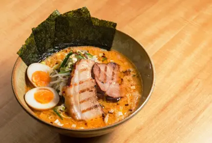
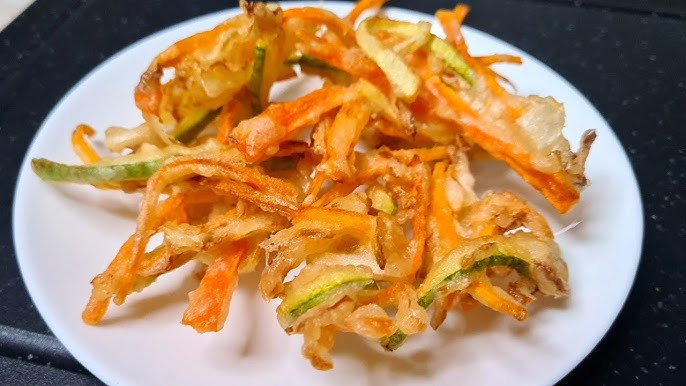
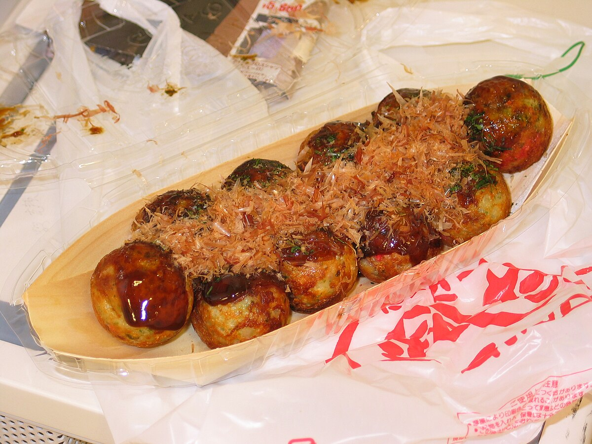
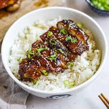
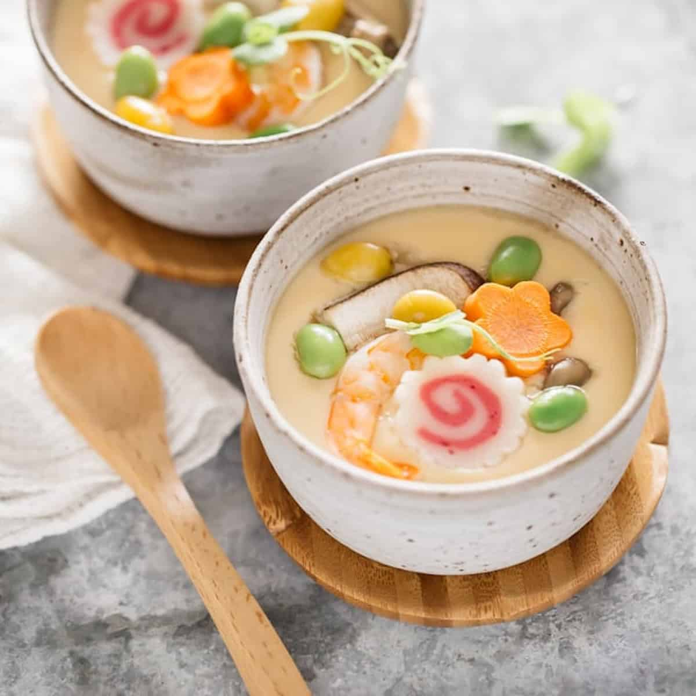

Sushi

O sushi é um prato icônico da culinária japonesa, composto por arroz temperado com vinagre e acompanhado de peixe cru, frutos do mar, legumes ou ovos. Existem diversas variações, como o nigiri, o maki e o temaki.
Ramen
O ramen é uma sopa de macarrão, com caldo saboroso e ingredientes variados, como carne de porco (chashu), ovo cozido, cebolinha, nori e broto de bambu. É uma das refeições mais populares no Japão.
Tempura
A tempura é uma técnica de fritura japonesa, onde os ingredientes, geralmente camarões, peixe e vegetais, são empanados em uma massa leve e crocante. Serve como acompanhamento ou prato principal.
Okonomiyaki

Okonomiyaki é uma espécie de panqueca salgada, feita com uma mistura de farinha, ovos, repolho, carne (geralmente carne de porco ou frutos do mar) e molho especial. É muito popular em Osaka e Hiroshima.
Takoyaki
O takoyaki é um bolinho redondo recheado com pedaços de polvo e frito até ficar crocante por fora. É servido com molho takoyaki, maionese e flocos de bonito seco.
Kare Raisu

O curry japonês é uma versão mais espessa e suave do curry, servido com arroz. Pode ser preparado com carne de frango, carne de boi ou porco, e é acompanhado de vegetais como batata, cenoura e cebola.
Donburi
Donburi é um prato simples, onde um ingrediente principal, como carne de boi (gyudon), frango (oyakodon) ou peixe (unadon), é servido sobre uma tigela de arroz branco.
Miso Soup

A sopa de miso é um caldo claro preparado com pasta de miso (fermentada de soja) e caldo dashi. Frequentemente inclui tofu, alga wakame e cebolinha, e é uma entrada tradicional nas refeições japonesas.
Yakisoba

Yakisoba é um prato de macarrão frito, preparado com vegetais, carne (geralmente porco ou frango) e um molho à base de molho de soja, açúcar e molho de ostra. Pode ser encontrado tanto em restaurantes quanto em festivais.
Chawanmushi
O chawanmushi é um pudim salgado de ovo, cozido no vapor, com um recheio de cogumelos, camarões, frango e outros ingredientes, proporcionando uma textura suave e delicada. É servido em uma pequena tigela, como entrada ou aperitivo.